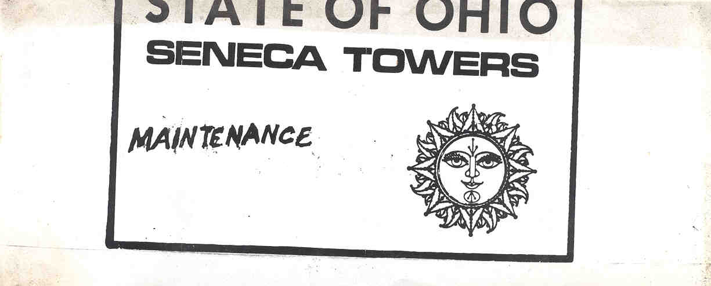
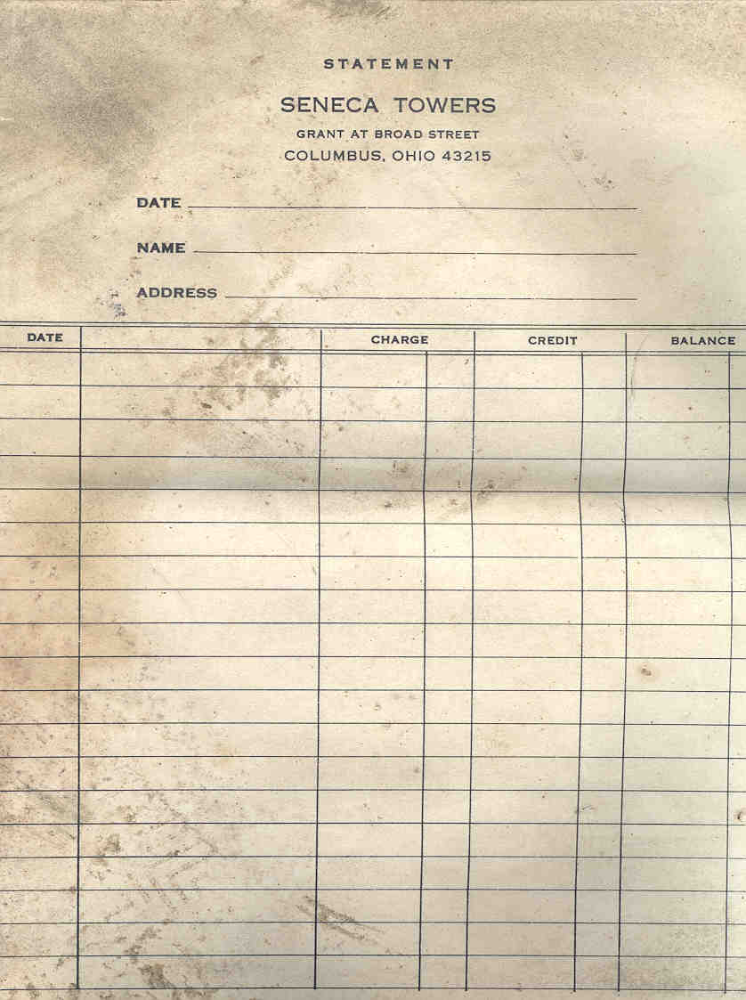
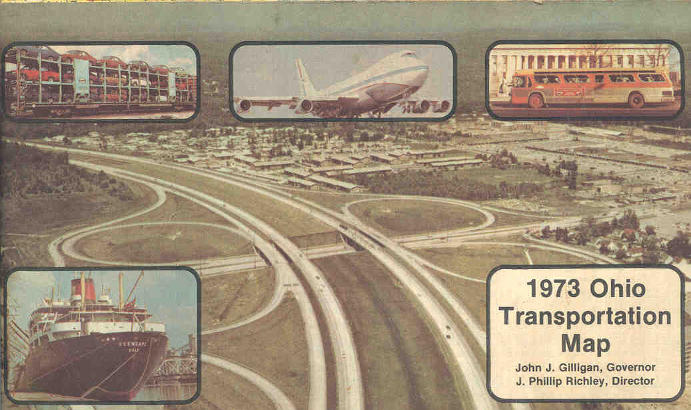
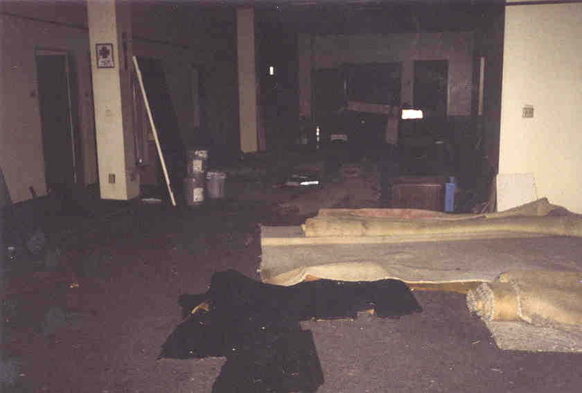
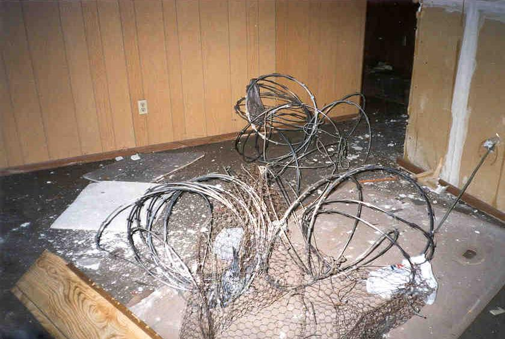

Artifacts
There was lots of stuff to see inside the Seneca--especially paperwork. Here are a few I took along to scan for your enjoyment.

An inspection certificate for the freight elevator

Where to go in case of a tornado

A note found in a tenth floor bathroom

Sliced-off portion of a maintenance paper

Some Seneca Hotel Stationery

An old transportation map
On the first floor we found a huge section of the hotel filled with junk--everything from payroll stubs to boating magazines to bullets for a .38. Also in this section was--this is weird--a big coil of razorwire, the stuff they run along the top of prison fences. It's a little like barbed wire but about a hundred times nastier. What it was doing piled in this one office with the cheap fake-wood wall paneling, I don't know. There was also a big room which contained trashcans, lawn care equipment, paint, brand new-looking refrigerators, and furniture, and Rookie quite astutely ascertained that this must be a section still used by someone who owns and rents out property. We vacated this area quickly, but not before snooping around a little.


I don't feel too bad about stealing scrap paper. There's a lot more than that lying around the place.
Back